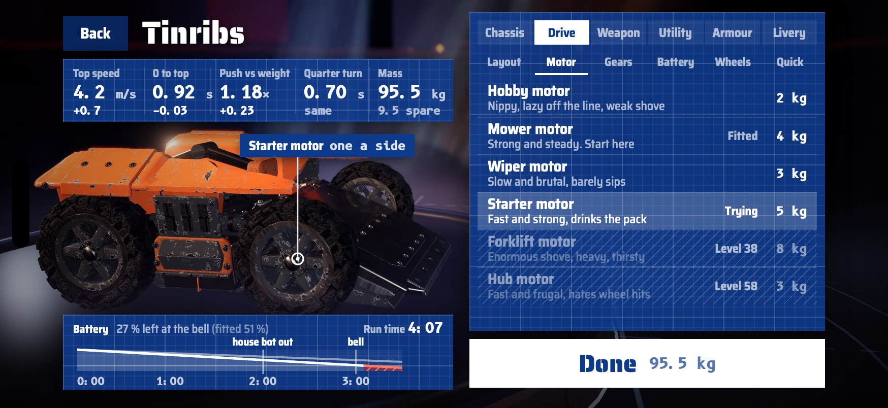
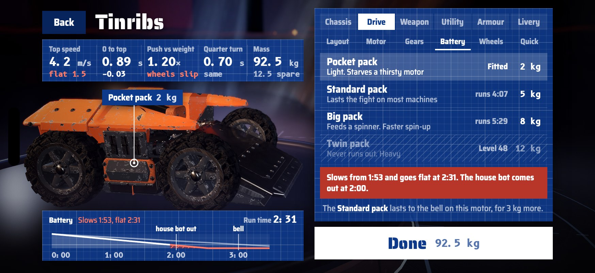
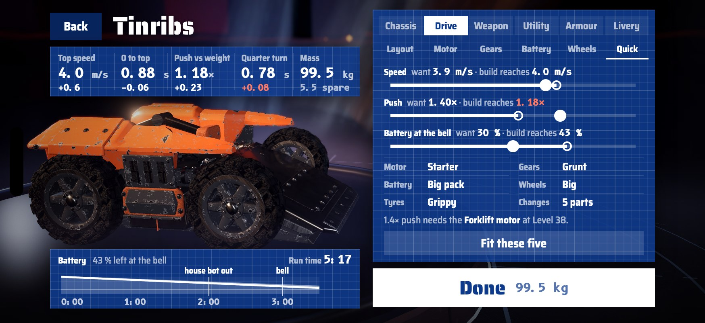
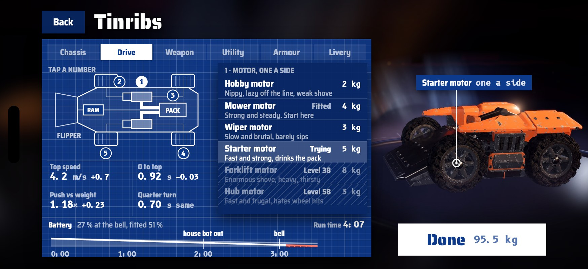
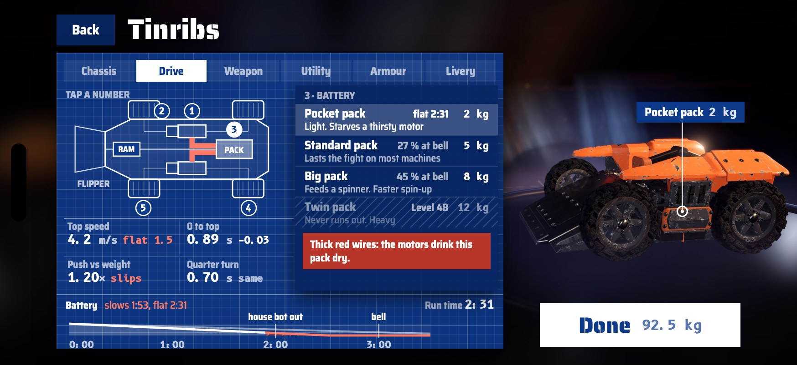
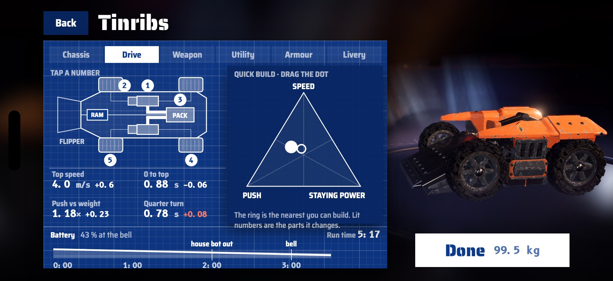
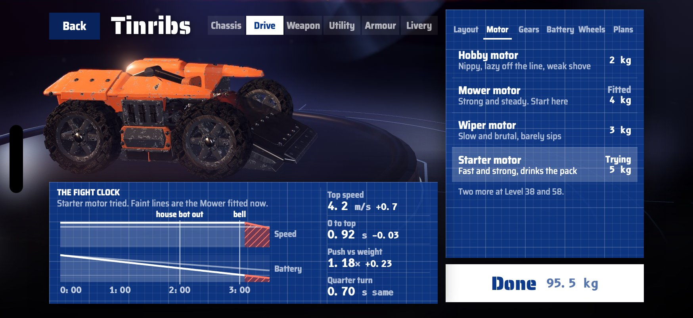
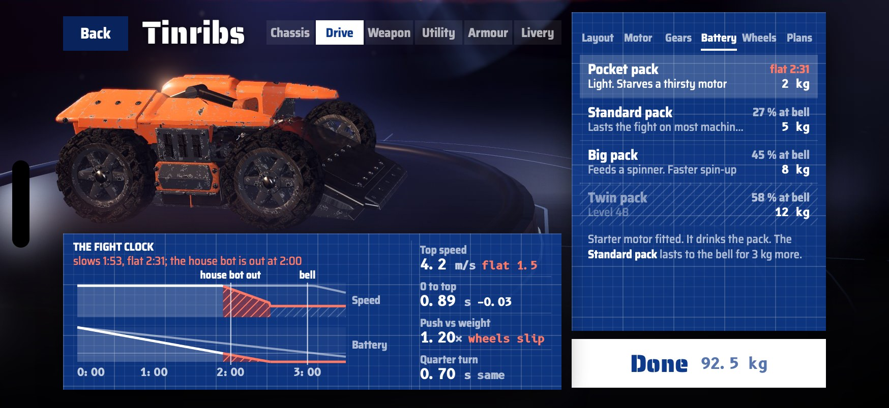
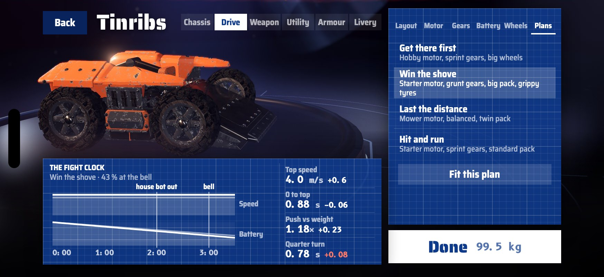

Mockups for owner decision 3: pick a motor, gears, a battery and wheels under the layout you already choose, and see what the whole machine does with them. Three builder layouts, shown on the same three moments, and my pick.
"You could choose power trains etc. would be quite fun." Owner, remembering the old PC game.
The research behind it: the licensed games described motors in feel words, parts must visibly change the fight (two games failed because they did not), whole-machine numbers beat part numbers, and a quick build by target stats keeps players who don't want to tinker. The full spec is docs/design/power-train.md. Every number below comes from the spec's own maths (docs/look/power-train/build_mockups.py).
The eight drive rows stay as the layout (2WD, 4WD, 6WD, tracks, omni, legs, hover, adaptive tracks). Under it:
| Motor | What the player reads | Speed | Push | Thirst | kg | Level |
|---|---|---|---|---|---|---|
| Hobby motor | Nippy, lazy off the line, weak shove | 1.15 | 0.70 | 0.70 | 2 | 1 |
| Mower motor | Strong and steady. Start here | 1.00 | 1.00 | 1.00 | 4 | 1 |
| Wiper motor | Slow and brutal, barely sips | 0.72 | 1.35 | 0.65 | 3 | 6 |
| Starter motor | Fast and strong, drinks the pack | 1.20 | 1.25 | 1.80 | 5 | 18 |
| Forklift motor | Enormous shove, heavy, thirsty | 0.85 | 1.70 | 1.40 | 8 | 38 |
| Hub motor | Fast and frugal, hates wheel hits | 1.18 | 1.15 | 0.90 | 3 | 58 |
The player only sees the words and the kilograms. The three multipliers stay behind the scenes and show up as the whole-machine readouts.
| Choice | Options | What it does in the fight |
|---|---|---|
| Gears | Sprint, balanced, grunt | Trade top speed for push on the same motor (x1.2 speed and x0.8 push, or the reverse at x0.8 and x1.25). |
| Battery | Pocket 2 kg, Standard 5 kg, Big 8 kg, Twin 12 kg | The drive, the weapon and boost all draw from it. Under a quarter charge the machine slows; empty, it limps. The Big pack replaces the Spare battery utility and keeps its faster spin-up and extra flipper charges. |
| Wheel size | Small, standard, big | Big wheels are faster and ride higher, so they are easier to get under. Small wheels push harder and sit lower, and they are refused on hulls whose nose would drag. |
| Tyres | Grippy, all-round, slick | Grippy pushes harder before the wheels slip and turns slower. Slick turns fast and gets shoved about. |
Tracks, omni, legs and hover take a motor, gears and a battery but no wheel or tyre choice. Hover fans draw power just to stay up, so a hover on a small pack is a real gamble.
Whole-machine numbers worked out from the real total mass, for Tinribs (wedge, 4WD, flipper) on its migrated setup:
The run time gauge is a fight clock: charge across 0:00 to 3:00, with the house bot's release at 2:00 and the bell marked. A pack that drops under a quarter turns red and hatched; empty is grey. A sensible build never gets there. A greedy one sags just as the endgame starts: Tinribs on a Starter motor and a Pocket pack slows from 1:53 and is flat at 2:31.
Each shown on the same three moments: choosing a motor (trying the Starter on Tinribs), a battery that's too small (Starter on a Pocket pack), and quick build (asking for 3.9 m/s and 1.4× push). All are 874 × 402 pt landscape phone screens in the approved blueprint overlay (Saira Stencil One, Saira Semi Condensed, B612 Mono, no line accents) over a real desktop Godot stage render of Tinribs on the plinth from the wave C menus. B's machine is the same render mirrored and scaled to stand in for a new right-hand camera framing.
The builder you have today, with the Drive tab split into Layout, Motor, Gears, Battery, Wheels and Quick. The machine's numbers sit above it and the fight clock below it, so the machine is framed by what it does.



Cost: about 8 agent-days in total (6 for the shared system below, 2 for this screen).
A plan drawing of the machine: hull, wheels, a motor and gearbox a side with chains to the wheels, the pack, the weapon. Numbered balloons are the tap targets and each opens a picker beside the drawing. Wire thickness shows what each part draws.



Cost: about 10 agent-days (6 shared, 4 for the drawings and pickers).
Every choice is shown as what it does across a 3 minute fight: a speed track and a battery track against the clock, with what is fitted now as a faint line. The choices sit in a narrow column; quick build becomes four fight plans.



Cost: about 9 agent-days (6 shared, 3 for the two-track clock and the plans).
Build A. It is the approved builder with more rows, the numbers and the battery clock frame the machine on every sub-tab, and the quick build sliders match the research (the handheld game's quick build worked from target stats, and a slider can say 3.9 m/s where a triangle cannot).
Borrow one thing from C. Tapping A's battery plate opens C's two-track fight clock full width for a moment, so the player who wants to see the speed fall away at 1:53 can. About half a day extra.
Keep B's idea for later. The plan drawing with wire thickness is the most characterful of the three, and it would make a good walk-out card or a pit crew scene once the system is proven.
Cost for the pick: about 8.5 agent-days, one wave of four Opus agents on separate files (Godot composer, battery and sag; Swift model, readouts and migration; the builder screen; gauntlets, balance and goldens), then the owner's phone check.
| Work | Agent-days | Notes |
|---|---|---|
| Catalogue rows and composer | 1 | Motors, gears, packs, wheels, tyres in Shared/parts.json; the composer turns them into the keys the drive modules already read (top speed, push, traction, turn, wheel radius, thrust), plus the mass derate. |
| Battery and sag in the fight | 1 | Draw per tick from the drive, weapon and boost; sag into speed, push, turn and weapons; HUD bar, dimmed lights, lower motor whine, commentary lines. Deterministic, replay safe. |
| Swift model and readouts | 1 | The same maths for the builder's numbers and fight clock, and the quick build solver. |
| Migration and rivals | 0.5 | Old saves get Mower, balanced, Standard pack; budget 100 to 105 kg so every machine keeps its spare; Spare battery becomes the Big pack; each rival gets a power train that suits it. |
| Gauntlets, balance, goldens | 2.5 | Push and battery benches, fit the readout constants to measured runs, AI-vs-AI balance across the field, one commit that re-baselines every fight hash that moves, new sag goldens. |
| Shared total | 6 | Then A +2 (+0.5 for C's clock), B +4, C +3. |
All power train parts are bought with scrap like every other part; no new in-app purchase. The core system (Hobby, Mower, Wiper, Starter; all gears; Pocket, Standard and Big packs; wheel sizes and tyres) unlocks at Level 18 or below, inside the free game's Level 33. The Forklift (38), Twin pack (48) and Hub motor (58) are full-game rewards, each with a catch rather than a straight upgrade.